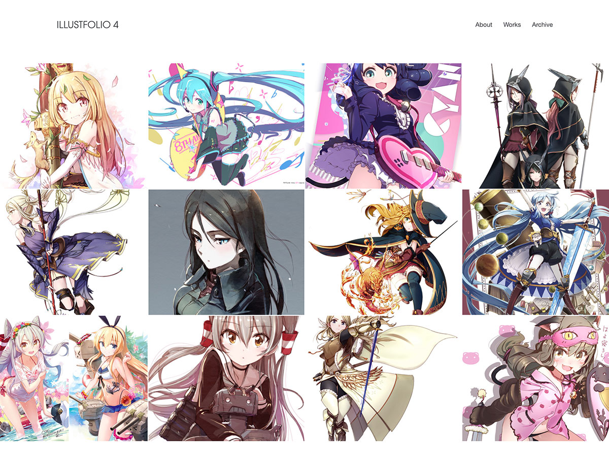
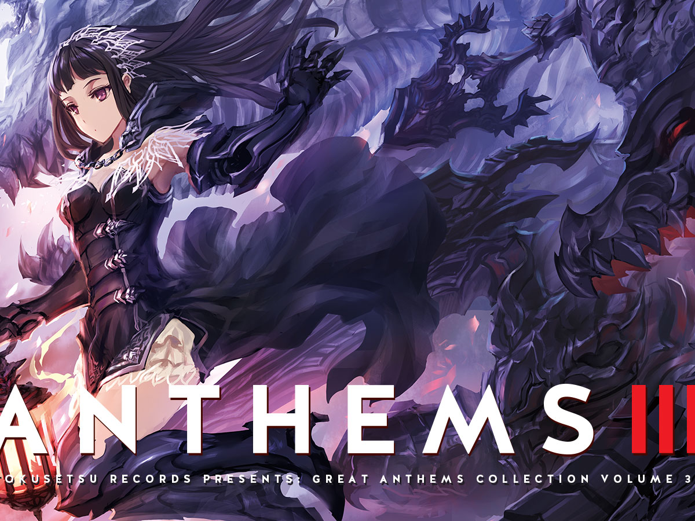
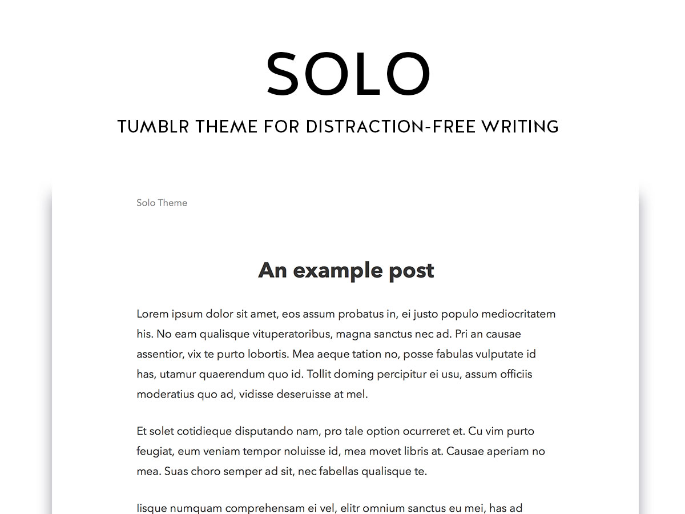

Tumblr themes
Made by @sanographix
無料で使えるTumblrテーマ
絵を飾る。告知サイトを作る。文章で思いを綴る。あなたの用途にあわせたテーマを用意しています。
-

NEW! Illustfolio 4
イラストレーターのためのテンプレート「ILLUSTFOLIO 4」で、イラストサイトを作ろう。画像を用意し、カスタマイズを施せば、あなたらしいポートフォリオサイトが簡単に完成します。
-

Tokusetsu 3
コーディング不要・サーバー不要で同人告知サイトを作れる「Tokusetsu」が大幅にアップデート。一新されたデザイン、より強力・柔軟になった編集項目など、多くの新機能を加えました。
-

Solo
「考えごとを綴る」ためのTumblrテーマです。削ぎに削いだデザインによって、あなたの文章がより引き立ちます。雰囲気の異なる2書体を選択可能。自分と向き合い、表現しよう。
-

Illustfolio 3
イラストポートフォリオサイトが更に一瞬で作れるTumblrテーマ。バージョン3.0では、画面いっぱいにカバー画像を表示するようにしました。無限スクロールも搭載。